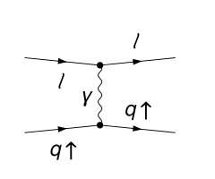
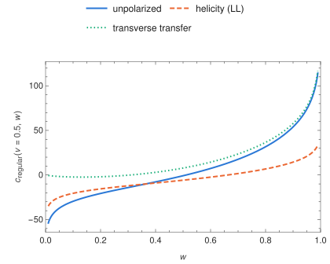
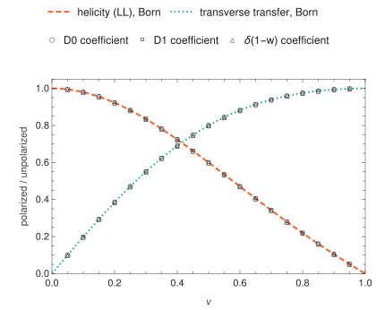

Transverse spin transfer in lepton–quark scattering
The NLO hard part of $\ell\,q^\uparrow\to q^\uparrow+X$: a transversely polarized quark scatters off the lepton and the transverse spin of the outgoing quark is measured. At the Electron-Ion Collider it enters measurements of quark transversity through the transverse spin of the observed parton, as for a transversely polarized hyperon, the spin asymmetry of a single hadron or a dihadron inside a jet, or one- and two-point energy correlators in the jet. new

What is computed
$T=\sigma(k^\uparrow\to p^\uparrow)-\sigma(k^\uparrow\to p^\downarrow)$ from the densities $\tfrac12\not k\,\gamma_5\not s_k$ and $\not p\,\gamma_5\not s_p$, along the normal to the scattering plane ($T_{NN}$) and in the plane ($T_{XX}$); the Collins projection is $T_C=\tfrac12(T_{XX}+T_{NN})$, with Born value $T_C^{(0)}=-4e^4e_q^2\,su/t^2$ (the evanescent terms of $T_{XX}$ and $T_{NN}$ cancel). The transversity kernel $P^T_{qq}$ acts on both quark legs. The resolved-photon contributions are given at Born level for all parton–parton channels.
For a measured parton of momentum $p$ the partonic cross section $\sigma = s\,E\,d\sigma/d^3p$ is written in $v = 1 + t/s$ and $w = -u/(s+t)$, with $s=(l+k)^2$, $t=(k-p)^2$, $u=(l-p)^2$ for the lepton momentum $l$ and the incoming parton momentum $k$ and $0 < v,w < 1$:
$$\sigma = \sigma_{\rm Born}\,\delta(1-w) + P(v,w)\,c_{\rm reg}(v,w) + P(v,1)\big[c_{0}(v)\,\big[\tfrac{1}{1-w}\big]_+ + c_{1}(v)\,\big[\tfrac{\ln(1-w)}{1-w}\big]_+ + c_{\delta}(v)\,\delta(1-w)\big],$$Here $\sigma_{\rm Born}$ is the lowest-order term, and $c_{\rm reg}$, $c_0$, $c_1$, $c_\delta$ are the coefficients
$R$, $B$, $C$, $A$ of the paper, with $P$ its normalization $\mathcal N$. The scales enter through the separate scales $\mu_I$, $\mu_O$, $\mu_L$ of the incoming quark, the outgoing quark and the photon-in-lepton subtraction ($\mu_F$, $\mu_F'$, $\mu_L$ in the paper; logarithms $L_I$, $L_O$, $L_L$ in Collins.wl); the unpolarized entry of the same file, a check of the pipeline, uses one common scale as for lepton–quark scattering.
Here $\sigma_{\rm Born}=4\alpha_{\rm em}^2e_q^2/[s(1-v)^2]$ and $P=\alpha_{\rm em}^2e_q^2C_F\alpha_s/(\pi s v w)$.
Checks
The three algebra routes agree exactly; poles cancel; the $\mu_I$ and $\mu_O$ dependence equals the convolutions with the transversity kernel, the $\mu_L$ dependence cancels against the photon distribution convolved with the photon Born term, and there is no $\mu_R$ dependence at this order; the coefficients are those given in the paper. The same files reproduce the unpolarized coefficient of Hinderer, Schlegel and Vogelsang as a check of the pipeline.

